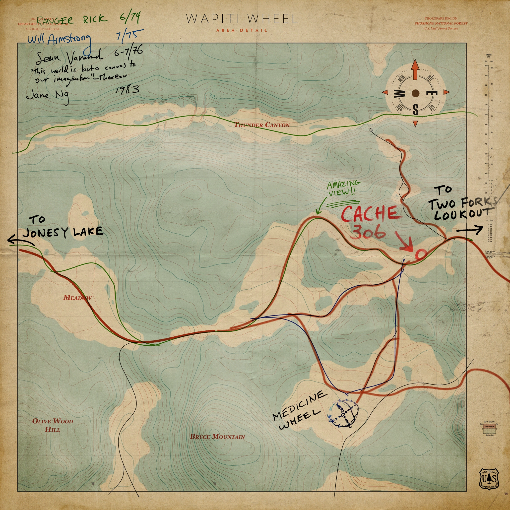

<!DOCTYPE html>
<html lang="en">
<head>
	<meta	charset="utf-8">
	<meta	name="viewport" 	content="width=device-width, initial-scale=1">
	
	<title>Firewatch – Map [work in progress!]</title>
	<meta	name="dcterms.issued"	content="2025-05-17">
	<meta	name="author"		content="You Gee" />
	<meta	name="description"
		content="All maps from the computer game 'Firewatch' as an interactive app." />

<!--	
	<link rel="shortcut icon" type="image/x-icon" href="docs/images/favicon.ico" />
-->

<!-- Leaflet CSS -->
    <link rel="stylesheet" href="https://unpkg.com/leaflet@1.9.4/dist/leaflet.css" integrity="sha256-p4NxAoJBhIIN+hmNHrzRCf9tD/miZyoHS5obTRR9BMY=" crossorigin=""/>
<!-- Leaflet JS, preloaded -->
    <script rel="preload" src="https://unpkg.com/leaflet@1.9.4/dist/leaflet.js" integrity="sha256-20nQCchB9co0qIjJZRGuk2/Z9VM+kNiyxNV1lvTlZBo=" crossorigin=""></script>
<!-- preload first map image -->
    <link rel="preload" as="image" href="map_overview.webp"/>


	<style>
		body, img {
			padding:	0;
			margin:		0;
		}
		html, body, #map {
			width:	100vw;
			height:	100vh;
		}
		img { width:1px; height:1px; }
		.blend-multiply { mix-blend-mode: multiply; }
	</style>

	
</head>
<body>

<div id="map">
	<!-- warming up the browser’s cache with the map images [needs CSS abs pos or similar to not destroy layout]-->
<!--
		
	
	
	
	
	
	
	
	
	
	
	
	
	
	
-->
</div>

<script>
//////////// LAYER DEFINITIONS ////////////

const map_overview 		= L.imageOverlay(	'map_overview.webp',			[[-2997, -5909], [ 6537, 3625]]  );
const map_overview_clean	= L.imageOverlay(	'Firewatch-World-Map-Clean.webp',	[[-2997, -5909], [ 6537, 3625]]  );
const FireFinderMap 		= L.imageOverlay(	'FireFinderMap.webp',			[[-5796, -5767], [ 5742, 5771]]  );
const FireFinderMapBurned 	= L.imageOverlay(	'FireFinderMapBurned.webp',		[[-3170, -5804], [ 5617, 2983]]  );
const FirefinderMapDelilah 	= L.imageOverlay(	'FirefinderMapDelilah.webp',		[[ 1977, -5739], [13448, 5732]]  );
const foldedmap2 		= L.imageOverlay(	'foldedmap2.webp',			[[-3858, -5325], [ -832,-2299]]  );

// Henry_annotations with blend-multiply class
const Henry_annotations 	= L.imageOverlay(	'Henry_annotations.webp',		[[-2997, -5909], [ 6537, 3625]],    { className: 'blend-multiply' }  );

// caches (in desired order)
const map_cache_backcountry 	= L.imageOverlay(	'map_cache_backcountry.webp',		[[ 1499, -4120], [ 5205, -414]]  );
const map_cache_cave 		= L.imageOverlay(	'map_cache_cave.webp',			[[  338,  -844], [ 3622, 2440]]  );
const map_cache_lakecreek 	= L.imageOverlay(	'map_cache_lakecreek.webp',		[[ -609, -5495], [ 3347,-1539]]  );
const map_cache_rubyriver 	= L.imageOverlay(	'map_cache_rubyriver.webp',		[[-2731, -2572], [ -254,  -95]]  );
const map_cache_snobros 	= L.imageOverlay(	'map_cache_snobros.webp',		[[-2773, -1233], [  369, 1909]]  );
const map_cache_teencamp 	= L.imageOverlay(	'map_cache_teencamp.webp',		[[-3858, -5325], [ -832,-2299]]  );
const map_cache_towerhub 	= L.imageOverlay(	'map_cache_towerhub.webp',		[[-1211, -3577], [ 1904, -462]]  );
const map_cache_wirehike 	= L.imageOverlay(	'map_cache_wirehike.webp',		[[ 3295,  -765], [ 5343, 1283]]  );
const Doc_BrianDndMap 		= L.imageOverlay(	'Doc_BrianDndMap.webp',			[[-4570, -6072], [ 1970, 2447]]  );

//////////// DECLARE BASE MAPS ////////////
const baseMaps = {
	'Firefinder (Two Forks)':	FireFinderMap
/*
,
	'“Satellite”':			WorldTopView,
 	'“Terrain”':			WorldHeightMap
*/
};

//////////// OVERLAY LAYER CONTROLS (ordered!) ////////////
const overlayMaps = {
    'Firefinder (burned)':		FireFinderMapBurned,
    'Firefinder (Delilah)':		FirefinderMapDelilah,
    'Henry’s map':			map_overview,
    'Henry’s map (pristine)':		map_overview_clean,
    '“folded map”':			foldedmap2,
    'Cache 309 “Teen Camp”':		map_cache_teencamp,
    'Cache 308 “Ruby River”':		map_cache_rubyriver,
    'Cache 307 [as 308] “Sno Bros”':	map_cache_snobros,
    'Cache 306 “tower hub”':		map_cache_towerhub,
    'Cache 305 “Lake Creek”':		map_cache_lakecreek,
    'Cache 303 “Cave”':			map_cache_cave,
    'Cache 302 “wire hike”':		map_cache_wirehike,
    'Cache 241 “backcountry”':		map_cache_backcountry,
	
    'Henry’s annotations [work in progress!]':          Henry_annotations,
    'Brian’s DnD map':			Doc_BrianDndMap
  };

//////////// MAP SETUP ////////////
const map = L.map('map', {
    layers:        [FireFinderMap, map_overview],
    crs:           L.CRS.Simple,
    minZoom:       -5,
    maxZoom:       5,
    zoomDelta:     1,
    zoomSnap:      0,
    attributionControl: false
});

//////////// MAIN ////////////

// view //
map.fitBounds([[-3000, -3000], [3000, 3000]]);

// scale bar //
L.control.scale({
    metric:    true,
    imperial:  true,
    maxWidth:  320
}).addTo(map);

// add layers to map //
L.control.layers(baseMaps, overlayMaps).addTo(map);

</script>

</body>
</html>
